Chapter 6: The Bayesian Approach to Standard Regression Analysis
Chapter06.RmdSection 6.1 The Standard Linear Regression Model
Example 6.1: Movie data
We use the movie data provided within the package to illustrate the Bayesian analysis of a regression model. The data set is a preprocessed version of the one provided by Lehrer and Xi (2017).
library("BayesianLearningCode")
data("movies", package = "BayesianLearningCode")Section 6.2 Bayesian Learning for a Standard Linear Regression Model
Section 6.2.1 Bayesian Learning Under Improper Priors
Example 6.2: Movie data: Analysis under improper prior
We use as response y the variable
OpenBoxOffice, which contains the box office sales at the
opening weekend in Mio.$, and as covariates the budget (Budget,
in Mio.$) and the number of screens (Screens, in 1000) the film
was forecast to be in theaters six weeks prior to opening.
We center the covariates Budget and Screens at their means in the data set. Thus, the intercept represents the expected box office sales at the opening weekend (in Mio.$) of a film with average budget and forecast to be screened on an average number of screens in the theaters.
y <- movies[, "OpenBoxOffice"]
covs <- c("Budget", "Screens")
covs.cen <- scale(movies[, covs], scale = FALSE) # center the covariates
N <- length(y) # number of observations
X <- as.matrix(cbind("Intercept" = rep(1, N), covs.cen)) # regressor matrix
d <- dim(X)[2] # number of regression effectsWe then define a function to compute the parameters of the posterior distribution of the regression effects under the improper prior .
regression_improper <- function(y, X) {
BN <- solve(crossprod(X))
Xy <- crossprod(X, y)
beta.hat <- BN %*% Xy
SSR <- as.numeric(crossprod(y - X %*% beta.hat))
cN <- (N - d) / 2
CN <- SSR / 2
post.var <- (CN / cN) * BN
list(beta.hat = beta.hat, BN = BN, cN = cN, CN = CN, post.var = post.var)
}The following table reports the posterior means together with their equal-tailed 95% credible intervals.
reg.improp <- regression_improper(y, X)
beta.hat <- reg.improp$beta.hat
post.sd <- sqrt(diag(reg.improp$post.var))
cN <- reg.improp$cN
knitr::kable(round(cbind(qt(0.025, df = 2 * cN) * post.sd + beta.hat,
beta.hat,
qt(0.975, df = 2 * cN) * post.sd + beta.hat), 3),
col.names = c("2.5% quantile", "posterior mean", "97.5% quantile"))| 2.5% quantile | posterior mean | 97.5% quantile | |
|---|---|---|---|
| Intercept | 15.977 | 19.110 | 22.243 |
| Budget | 0.009 | 0.174 | 0.339 |
| Screens | 1.073 | 1.719 | 2.365 |
Based on the posterior means, the expected box office sales on the opening weekend equal Mio.$ 19.11 for a film with an average Budget and forecast to be shown on an average number of Screens. For such a film the expected box office sales on the opening weekend are Mio.$ 0.174 higher if the budget is Mio.$ 1 higher; for a film with an average budget to be shown on 1000 screens more the expected box office sales are Mio.$ 1.719 higher.
To show the uncertainty of the estimates, we plot the (univariate) marginal posterior distribution of the intercept as well as the univariate and bivariate marginal posterior distributions of the covariate effects.
lim <- round(3*post.sd, 2)
layout(matrix(c(0, 1, 3, 2, 0, 4), nrow = 2), widths = c(2, 3, 1),
heights = c(1, 3), respect = TRUE)
par(mar = c(3, 2, 1, 1))
curve(dt((x - beta.hat[1]) / post.sd[1], df = 2 * cN),
from = beta.hat[1] - lim[1], to = beta.hat[1] + lim[1],
ylab = "", xlab = "", main = "")
mtext("Intercept", 1, line = 1.7)
f <- function(x1, x2) {
mvtnorm::dmvt(cbind(x1 - beta.hat[2], x2 - beta.hat[3]),
sigma = reg.improp$post.var[2:3, 2:3],
df = 2 * reg.improp$cN, log = FALSE)
}
xx1 <- seq(-lim[2], lim[2], length = 201) + beta.hat[2]
xx2 <- seq(-lim[3], lim[3], length = 201) + beta.hat[3]
z <- outer(xx1, xx2, f)
par(mar = c(3, 3, 1, 1))
contour(xx1, xx2, z, add = FALSE)
mtext(rownames(beta.hat)[2], 1, line = 1.7)
mtext(rownames(beta.hat)[3], 2, line = 1.7)
par(mar = c(0, 3, 1, 1))
mar.x1 <- dt((xx1 - beta.hat[2]) / post.sd[2], df = 2 * reg.improp$cN,
log = FALSE)
plot(xx1, mar.x1, type = "l", xaxt = "n", ylab = "")
par(mar = c(3, 0, 1, 1))
mar.x2 <- dt((xx2 - beta.hat[3]) / post.sd[3], df = 2 * reg.improp$cN,
log = FALSE)
plot(mar.x2, xx2, type = "l", yaxt = "n", xlab = "")For completeness we finally report also the posterior mean of the error variance and its equal-tailed 95% credible interval.
sigma2.hat <- reg.improp$CN /(cN-1)
knitr::kable(round(cbind(qinvgamma(0.025, a = cN, b = reg.improp$CN),
sigma2.hat,
qinvgamma(0.975, a = cN, b = reg.improp$CN)), 2),
col.names = c("2.5% quantile", "posterior mean", "97.5% quantile"))| 2.5% quantile | posterior mean | 97.5% quantile |
|---|---|---|
| 178.38 | 239.07 | 319.96 |
Example 6.3: Movie data: Prediction
We are now interested in predicting the box office sales on the opening weekend. We compute the predicted box office sales for a film with an average number of Screens for a range of values for Budget.
X_new <- cbind(Intercept = 1,
Budget = -30:60,
Screens = 0)
ypred <- X_new %*% beta.hat
ypred.var <- sigma2.hat * (rowSums((X_new %*% reg.improp$BN) * X_new) + 1)The following plot shows the point predictions together with the 50% and 80% prediction intervals.
budget <- X_new[, "Budget"] + mean(movies[, "Budget"])
plot(budget, ypred, type = "l", lwd = 2, ylim = c(-20, 60),
xlab = "Budget", ylab = "Predicted box office sales")
pred.levels <- c(0.5, 0.8)
for (j in seq_along(pred.levels)) {
pred.quantile <- qt(1 - (1-pred.levels[j])/2, df = 2 * cN)
lines(budget, ypred - sqrt(ypred.var)*pred.quantile, lty = j+1)
lines(budget, ypred + sqrt(ypred.var)*pred.quantile, lty = j+1)
}
legend("bottomright",
c("Predicted mean",
paste0(pred.levels*100, "% Prediction interval")),
lty = 1:3, lwd = c(2, 1, 1))
y.pred <- X %*% beta.hat
plot(y, y.pred, xlim = c(-20, 160), ylim = c(-20, 160),
xlab = "observed sales", ylab = "predicted sales")
abline(a = 0, b = 1)
abline(h = 0, lty = 2)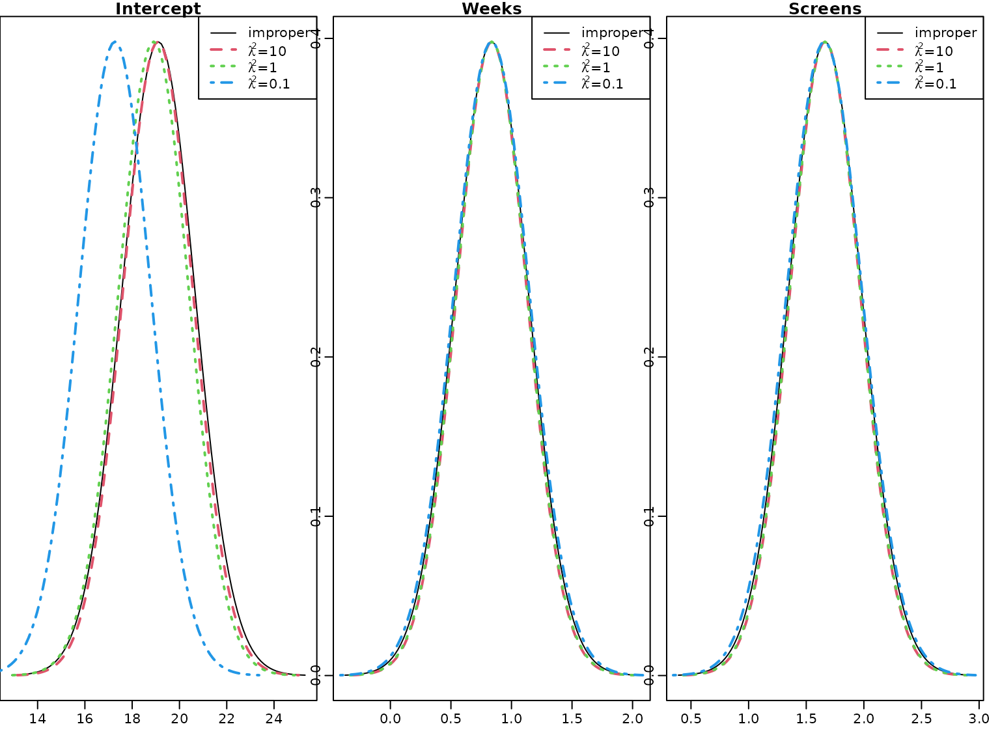 The prediction interval is symmetric around the posterior mean, but obviously the model is not adequate, as the lower limit of the 80% prediction interval is negative for a budget below approximately Mio.$ 55.
We can take into account that box office sales are always positive by fitting a linear regression model on the log transformed sales.
log.y <- log(movies[, "OpenBoxOffice"])
reg.lny <- regression_improper(log.y, X)
lny.pred <- X_new %*% reg.lny$beta.hat
sigma2.hat <- reg.lny$CN /(reg.lny$cN-1)
lny.pred.var <- sigma2.hat * (rowSums((X_new %*% reg.lny$BN) * X_new) + 1)From the estimation results we determine the point predictions and prediction intervals for the logarithm of the box office sales and exponentiate the results to obtain the predictions for the sales.
The following figure shows the point prediction with the 50% and 80% prediction intervals for the box office sales for a film shown on an average number of Screens for a range of values for Budget derived from this model.
plot(budget, exp(lny.pred), type = "l", ylim = c(-20, 60), col = "blue",
xlab = "Budget", ylab = "Predicted box office sales", lwd = 2)
for (j in seq_along(pred.levels)) {
pred.quantile <- qt(1 - (1-pred.levels[j])/2, df = 2 * reg.lny$cN)
lines(budget, exp(lny.pred - sqrt(lny.pred.var)*pred.quantile),
col = "blue", lty = j+1)
lines(budget, exp(lny.pred + sqrt(lny.pred.var)*pred.quantile),
col = "blue", lty = j+1)
}
legend("bottomright",
c("Predicted mean",
paste0(pred.levels*100, "% Prediction interval")),
col = "blue", lty = 1:3, lwd = c(2, 1, 1))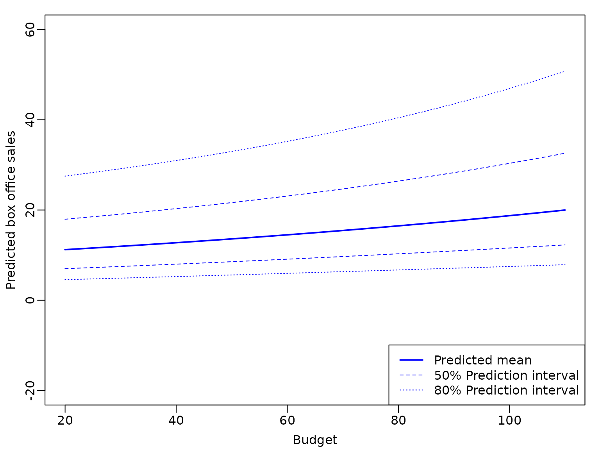
We see that the bounds of the prediction intervals are positive, but – due to the exponential transformation – the prediction intervals are no longer symmetric around the point predictions.
Next, we compare the point predictions from both models to the observed box office sales.
plot(y, y.pred,xlim = c(-20, 160), ylim = c(-20, 160),
xlab = "Observed sales", ylab = "Predicted sales")
points(y, exp(X %*% reg.lny$beta.hat), col = "blue", pch = 16)
abline(a = 0, b = 1)
abline(h = 0, lty = 2)
legend("bottomright",
c("Linear regression on y", "Linear regression on ln(y)"),
col = c("black", "blue"), lty = 1)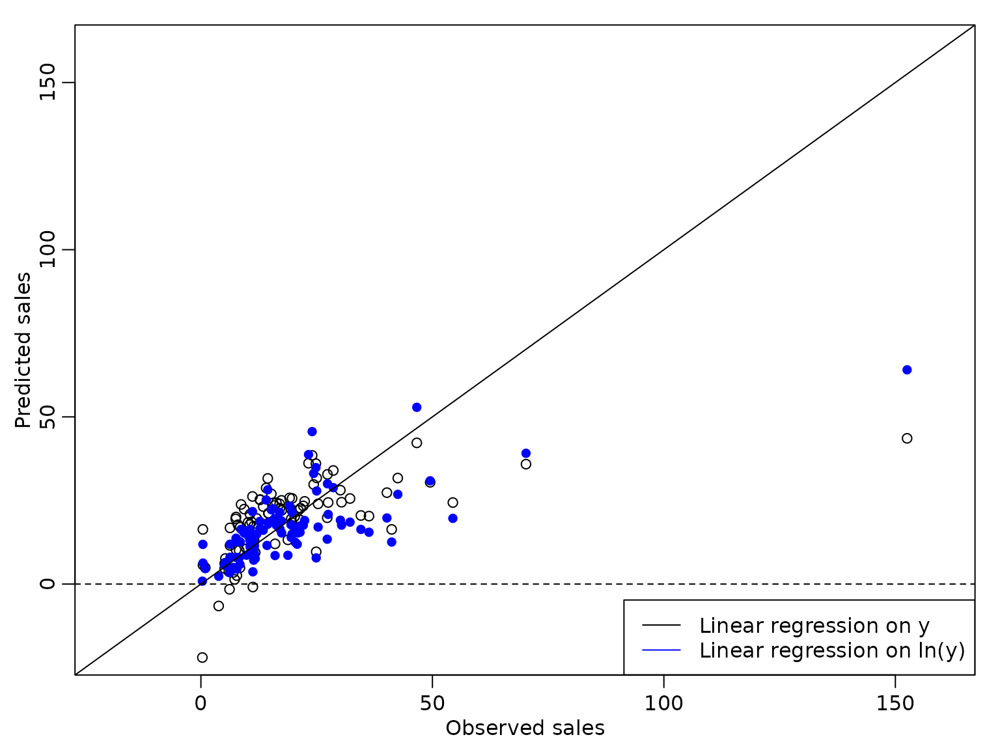 We see that the predicted values from the regression model on the logarithm of the box office sales are slightly better, but the observed box office sales of Mio.$ 152 are still predicted much too low.
Section 6.2.2 Bayesian Learning under Conjugate Priors
We next consider regression analysis under a conjugate prior. For this, we first define a function that yields the parameters of the posterior distribution.
regression_conjugate <- function(y, X, b0 = 0, B0 = 10, c0 = 0.01, C0 = 0.01) {
d <- ncol(X)
if (length(b0) == 1L)
b0 <- rep(b0, d)
if (!is.matrix(B0)) {
if (length(B0) == 1L) {
B0 <- diag(rep(B0, d))
} else {
B0 <- diag(B0)
}
}
B0.inv <- solve(B0)
BN.inv <- B0.inv + crossprod(X)
BN <- solve(BN.inv)
bN <- BN %*% (B0.inv %*% b0 + crossprod(X, y))
cN <- c0 + N / 2
SS.eps <- as.numeric(crossprod(y) + t(b0) %*% B0.inv %*% b0 -
t(bN) %*% BN.inv %*% bN)
CN <- C0 + SS.eps / 2
list(bN = bN, BN = BN, cN = cN, CN = CN)
}Example 6.4: Movie data - Analysis under conjugate prior
We specify a normal prior with mean zero and with on the regression effects and an inverse Gamma prior with and on . With this choice of the prior parameters and the prior is rather uninformative but guarantees existence of the posterior variance.
We perform a regression analysis on the box office sales and report the posterior mean of the regression effects together with the 2.5% and 97.5% quantiles of the posterior distribution in the following table.
res_conj1 <- regression_conjugate(y, X, b0 = 0, B0 = 10, c0 = 2.5, C0 = 1.5)
post.sd.conj1 <- sqrt(diag((res_conj1$CN / res_conj1$cN) * res_conj1$BN))
knitr::kable(round(cbind(
qt(0.025, df = 2 * res_conj1$cN) * post.sd.conj1 + res_conj1$bN,
res_conj1$bN,
qt(0.975, df = 2 * res_conj1$cN) * post.sd.conj1 + res_conj1$bN), 3),
col.names = c("2.5 quantile", "posterior mean", "97.5 quantile"))| 2.5 quantile | posterior mean | 97.5 quantile | |
|---|---|---|---|
| Intercept | 16.088 | 19.090 | 22.091 |
| Budget | 0.016 | 0.174 | 0.332 |
| Screens | 1.099 | 1.719 | 2.339 |
To illustrate the effects of a tighter prior on the regression effects, we also compute the posterior distributions for and .
res_conj2 <- regression_conjugate(y, X, b0 = 0, B0 = 1, c0 = 2.5, C0 = 1.5)
post.sd.conj2 <- sqrt(diag((res_conj2$CN / res_conj2$cN) * res_conj2$BN))
res_conj3 <- regression_conjugate(y, X, b0 = 0, B0 = 0.1, c0 = 2.5, C0 = 1.5)
post.sd.conj3 <- sqrt(diag((res_conj3$CN / res_conj3$cN) * res_conj3$BN))We plot the marginal posteriors together with those under the improper prior.
par(mfrow = c(1, 3))
for (i in seq_len(nrow(beta.hat))) {
curve(dt((x - beta.hat[i]) / post.sd[i], df = 2 * cN),
from = beta.hat[i] - 4 * post.sd[i],
to = beta.hat[i] + 4 * post.sd[i],
ylab = "", xlab = "" , main = rownames(beta.hat)[i])
curve(dt((x - res_conj1$bN[i]) / post.sd.conj1[i],
df = 2 * res_conj1$cN),
from = res_conj1$bN[i] - 4 * post.sd.conj1[i],
to = res_conj1$bN[i] + 4 * post.sd.conj1[i],
add = TRUE, col = 2, lty = 2, lwd = 2)
curve(dt((x - res_conj2$bN[i]) / post.sd.conj2[i],
df = 2 * res_conj2$cN),
from = res_conj2$bN[i] - 4 * post.sd.conj2[i],
to = res_conj2$bN[i] + 4 * post.sd.conj2[i],
add = TRUE, col = 3,lty = 3, lwd = 2)
curve(dt((x - res_conj3$bN[i]) / post.sd.conj3[i],
df = 2 * res_conj3$cN),
from = res_conj3$bN[i] - 4 * post.sd.conj3[i],
to = res_conj3$bN[i] + 4 * post.sd.conj3[i],
add = TRUE, col = 4,lty = 4, lwd = 2)
legend("topright",
c("improper",
expression(paste(lambda^2, "=", 10)),
expression(paste(lambda^2, "=", 1)),
expression(paste(lambda^2, "=", 0.1))),
col = 1:4, lty = 1:4, lwd = c(1, 2, 2, 2))
}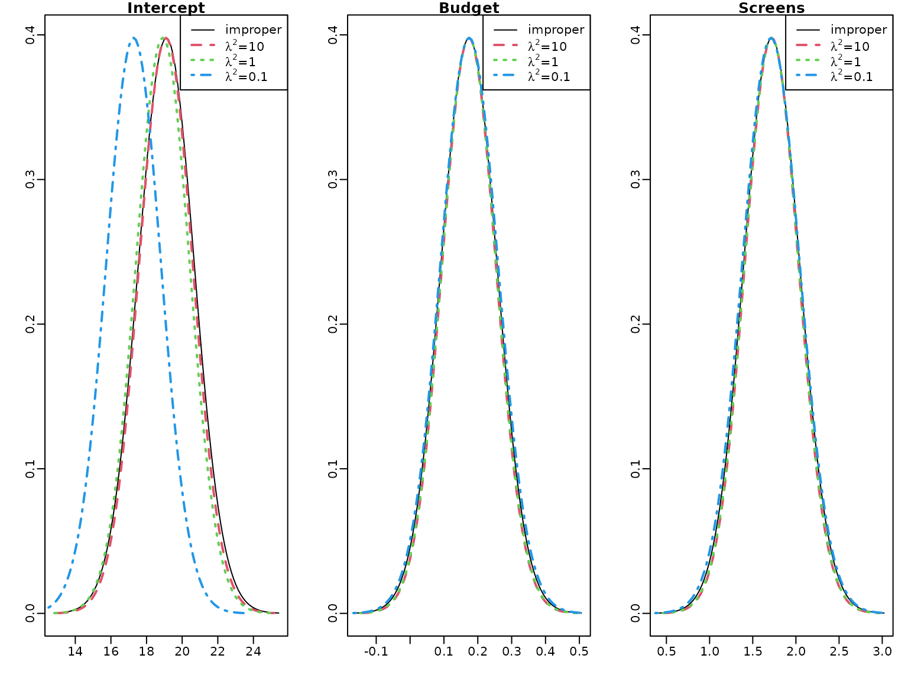 There is little difference to the improper prior for the effects of Budget and Screens, however the intercept is shrunk to zero for and even more for .
To illustrate the effect of the prior we compute the the weight matrix for the conjugate prior with mean and covariance matrix for .
W <- res_conj3$BN %*% solve(diag(rep(0.1, d)))
round(W, 5)
#> [,1] [,2] [,3]
#> Intercept 0.09615 0.00000 0.00000
#> Budget 0.00000 0.00029 -0.00040
#> Screens 0.00000 -0.00040 0.00451Obviously the weight of the prior mean is much larger for the intercept than for the effects of Budget and Screens. Together with the high value of the posterior mean of the intercept this explains the considerable shrinkage to zero of the intercept, whereas the effects of the two covariates are almost unshrunk.
6.3 Regression Analysis under the Semi-Conjugate Prior
First, we set up the Gibbs sampler to estimate the parameters of the regression model under a semi-conjugate prior.
reg_semiconj <- function(y, X, b0 = 0, B0 = 10000, c0 = 2.5, C0 = 1.5,
burnin = 1000L, M = M, start.sigma2) {
d <- dim(X)[2]
B0inv <- diag(rep(1 / B0, d), nrow = d)
b0 <- rep(b0, length.out = d)
# define quantities for the Gibbs sampler
XX <- crossprod(X)
Xy <- t(X) %*% y
cN <- c0 + N / 2
# prepare storing of results
betas <- matrix(NA_real_, nrow = M, ncol = d)
colnames(betas) <- colnames(X)
sigma2s <- rep(NA_real_, M)
# starting value for sigma2
if (missing(start.sigma2)) {
start.sigma2 <- var(y) / 2
}
sigma2 <- start.sigma2
for (m in 1:(burnin + M)) {
# sample beta from the full conditional
BN <- solve(B0inv + XX / sigma2)
bN <- BN %*% (B0inv %*% b0 + Xy / sigma2)
beta <- t(mvtnorm::rmvnorm(1, mean = bN, sigma = BN))
# sample sigma^2 from its full conditional
eps <- y - X %*% beta
CN <- C0 + crossprod(eps) / 2
sigma2 <- rinvgamma(1, cN, CN)
if (m > burnin) {
betas[m - burnin, ] <- beta
sigma2s[m - burnin] <- sigma2
}
}
return(post.draws = list(betas = betas, sigma2s = sigma2s))
} Example 6.5: Movie data - Traceplots of the Gibbs sampler
We run the sampler two times for 1000 draws and to show convergence to the posterior distribution we start from extreme values for the innovation variance, once from a very large and once from a very small value.
set.seed(421)
M <- 1000L # number of draws after burn-in
post.draws1 <- reg_semiconj(y, X, b0 = 0, B0 = 10000, c0 = 2.5, C0 = 1.5,
burnin = 0L, M = M, start.sigma2 = 10^6)
post.draws2 <- reg_semiconj(y, X, b0 = 0, B0 = 10000, c0 = 2.5, C0 = 1.5,
burnin = 0L, M = M, start.sigma2 = 10^-6)From the trace plots we see that the sampler converges very quickly.
for (i in seq_len(ncol(post.draws1$betas))) {
plot(post.draws1$betas[, i], type = "l", xlab = "Draws", ylab = "",
main = colnames(post.draws1$betas)[i])
lines(post.draws2$betas[, i], col="red")
}
plot(post.draws1$sigma2s, type = "l", xlab = "Draws", ylab = "",
main = expression(paste("Error variance ", sigma^2)))
lines(post.draws2$sigma2s, col="red")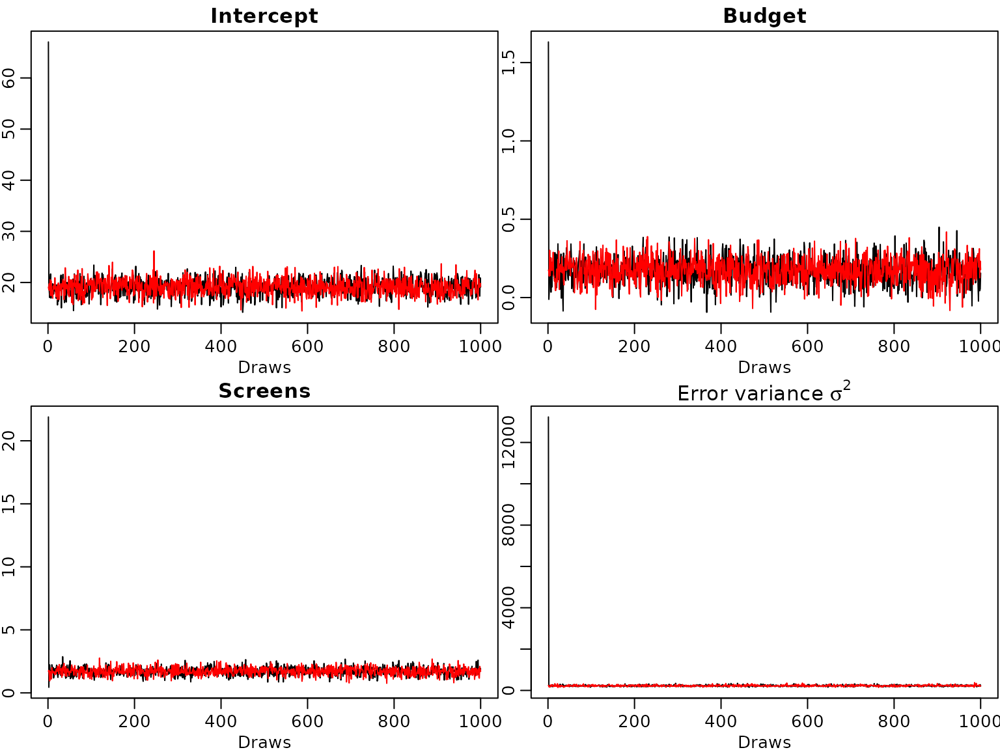 Even though the starting value for the error variance is far from the posterior distribution the burn-in phase of the sampler is very short.
Example 6.6: Movie data: Analysis under the semi-conjugate prior
We now include all available covariates in the regression analysis. As there is only one film with MPAA rating “G”, we merge the two ratings “G” and “PG” into one category which we define as our baseline.
movies["PG"] <- NULLWe center all covariates at zero and define the regressor matrix.
covs <- c("Comedy", "Thriller", "PG13", "R", "Budget", "Weeks", "Screens",
"S-4-6", "S-1-3", "Vol-4-6", "Vol-1-3")
covs.cen <- scale(movies[, covs], scale = FALSE)
N <- length(y) # number of observations
X <- cbind("Intercept" = rep(1, N), covs.cen) # regressor matrix
d <- dim(X)[2] # number regression effects
p <- d - 1 # number of regression effects without interceptNext, we define the prior parameters and run the sampler.
set.seed(421)
M <- 20000L # number of draws after burn-in
post.draws <- reg_semiconj(y, X, b0 = 0, B0 = 10000, c0 = 2.5, C0 = 1.5,
burnin = 1000L, M = M)To summarize the results nicely, we compute equal-tailed 95% credible intervals for the regression effects.
res.mcmc <- function(x, lower = 0.025, upper = 0.975){
res<-c(quantile(x, lower), mean(x), quantile(x, upper))
names(res) <- c(paste0(lower * 100, "%"), "Posterior mean",
paste0(upper * 100, "%"))
res
}
beta.sc <- post.draws$betas
res_beta.sc <- t(apply(beta.sc, 2, res.mcmc))
rownames(res_beta.sc) <- c("Intercept", covs)
knitr::kable(round(res_beta.sc, 3))| 2.5% | Posterior mean | 97.5% | |
|---|---|---|---|
| Intercept | 17.492 | 19.109 | 20.716 |
| Comedy | -2.597 | 1.492 | 5.553 |
| Thriller | -3.886 | 0.579 | 4.966 |
| PG13 | -8.535 | -2.732 | 2.993 |
| R | -3.643 | 2.217 | 8.039 |
| Budget | 0.041 | 0.128 | 0.214 |
| Weeks | 0.017 | 0.376 | 0.732 |
| Screens | 0.600 | 0.968 | 1.338 |
| S-4-6 | -4.851 | -1.281 | 2.358 |
| S-1-3 | -1.245 | 2.464 | 6.129 |
| Vol-4-6 | -19.684 | -16.726 | -13.784 |
| Vol-1-3 | 19.256 | 22.355 | 25.472 |
We do the same for the error variances.
sigma2.sc <- post.draws$sigma2s
res_sigma2.sc <- res.mcmc(sigma2.sc)
knitr::kable(t(round(res_sigma2.sc, 3)))| 2.5% | Posterior mean | 97.5% |
|---|---|---|
| 47.333 | 63.925 | 86.247 |
Obviously, taking into account more covariates the posterior mean of the error variance is considerably lower than in the model with only Budget and Screens used as covariates.
The different signs of the effects of Vol-4-6 and Vol-1-3 deserve some further comment. The two covariates are highly correlated. Due to this high correlation the usual interpretation of the effect by changing the value of one covariate only does not make sense. Hence, we predict the change in box office sales for a film where the twitter volume scores are 1 unit higher in weeks 4-6 as well as weeks 1-3.
6.4 Regression Analysis Based on the Horseshoe Prior
A comparison of the normal and the horseshoe prior shows that the latter has much more mass close to zero and fatter tails.
beta <- seq(from = -4, to = 4, by = 0.01)
# Horseshoe prior
# Approximated by the result of Theorem 1 in Carvalho and Polson (2010)
c <- 1 / sqrt(2 * pi^3)
l <- c / 2 * log(1 + 4 / beta^2)
u <- c * log(1 + 2 / beta^2)
par(mfrow = c(1, 1))
plot(beta, (u + l) / 2, type = "l", ylim = c(0, 0.55), xlab = expression(beta),
ylab = "", lty = 1, col = "blue")
lines(beta, dnorm(beta), lty = 2) # Standard normal prior
legend("topright", legend = c("Horseshoe", "Standard normal"),
lty = 1:2, col = c("blue", "black"))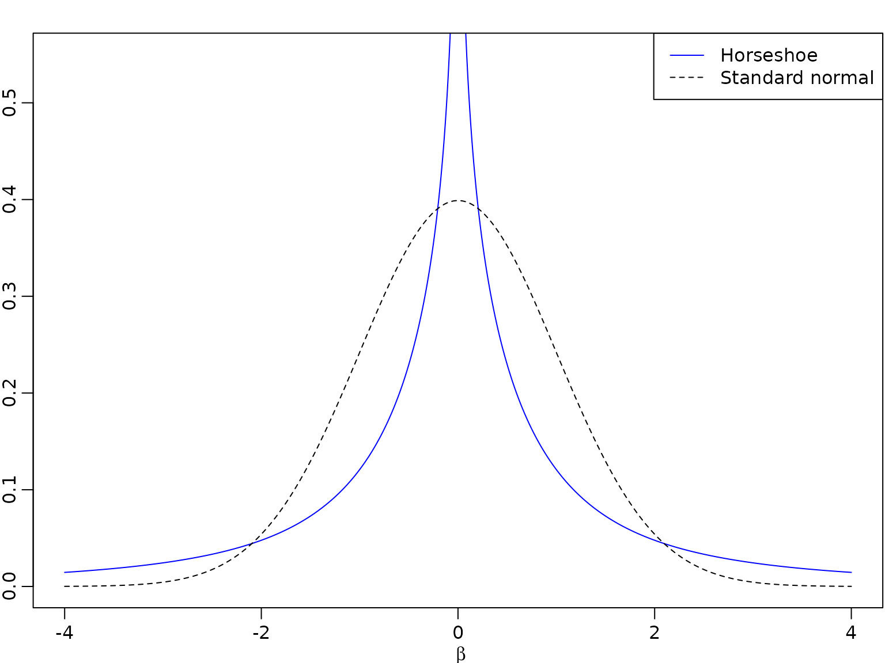
We set up the Gibbs sampler of the regression model with a proper normal prior on the intercept and horseshoe priors on the covariate effects.
reg_hs <- function(y, X, b0 = 0, B0 = 10000, c0 = 2.5, C0 = 1.5,
burnin = 1000L, M) {
d <- dim(X)[2]
p <- d - 1
B00inv <- 1 / B0 # prior precision for the intercept
b0 <- rep(b0, length.out = d)
# prepare storing of results
betas <- matrix(NA_real_, nrow = M, ncol = d)
colnames(betas) <- colnames(X)
sigma2s<- rep(NA_real_, M)
tau2s <- matrix(NA_real_, nrow = M, ncol = p)
lambda2s <- rep(NA_real_, M)
# define quantities for the Gibbs sampler
XX <- crossprod(X)
Xy <- crossprod(X, y)
cN=c0+N/2
# set starting values
sigma2 <- var(y) / 2
tau2 <- rep(1, p)
lambda2 <- 1
for (m in seq_len(burnin + M)) {
# sample beta from the full conditional
B0inv <- diag(c(B00inv, 1 / (lambda2 * tau2)))
BN <- solve(B0inv + XX / sigma2)
bN <- BN %*% (B0inv %*% b0 + Xy / sigma2)
beta <- t(mvtnorm::rmvnorm(1, mean = bN, sigma = BN))
beta.star <- beta[2:d]
# sample sigma^2 from its full conditional
eps <- y - X %*% beta
CN <- C0 + crossprod(eps) / 2
sigma2 <- rinvgamma(1, cN, CN)
# sample tau^2
xi <- rexp(p, rate = 1 + 1 / tau2)
tau2 <- rinvgamma(p, 1, xi + 0.5 * beta.star^2 / lambda2)
# sample lambda^2
zeta <- rexp(1, rate = 1 + 1 / lambda2)
lambda2 <- rinvgamma(1, (p + 1) / 2, zeta + 0.5 * sum(beta.star^2 / tau2))
# store results
if (m > burnin) {
betas[m - burnin, ] <- beta
sigma2s[m - burnin] <- sigma2
tau2s[m - burnin,] <- tau2
lambda2s[m - burnin] <- lambda2
}
}
list(betas = betas, sigma2s = sigma2s, tau2s = tau2s, lambda2s = lambda2s)
} Example 6.7: Movie data - Analysis under the Horseshoe prior
We estimate the parameters in the regression model with the same prior on intercept and error variance as in the semi-conjugate prior, but a horseshoe prior on the covariate effects.
set.seed(421)
post.draws.hs <- reg_hs(y, X, M = M)Again, we show the posterior mean estimates of the regression effects together with their equal-tailed 95% credible intervals in a table.
beta.hs <- post.draws.hs$betas
res_beta.hs <- t(apply(beta.hs, 2, res.mcmc))
rownames(res_beta.hs) <- colnames(X)
knitr::kable(round(res_beta.hs, 3))| 2.5% | Posterior mean | 97.5% | |
|---|---|---|---|
| Intercept | 17.515 | 19.107 | 20.702 |
| Comedy | -1.569 | 0.278 | 2.811 |
| Thriller | -2.247 | 0.039 | 2.406 |
| PG13 | -6.208 | -1.857 | 0.792 |
| R | -1.355 | 0.998 | 5.004 |
| Budget | 0.035 | 0.126 | 0.213 |
| Weeks | -0.002 | 0.334 | 0.679 |
| Screens | 0.587 | 0.956 | 1.322 |
| S-4-6 | -1.546 | 0.225 | 1.686 |
| S-1-3 | -0.535 | 0.763 | 2.725 |
| Vol-4-6 | -19.106 | -16.148 | -13.169 |
| Vol-1-3 | 18.659 | 21.749 | 24.836 |
Estimation results are very similar to those under the semi-conjugate prior for the effects of Budget, Weeks, Screens, Vol-4-6 and Vol-1-3. For all other covariates the posterior means of their effects are closer to zero and the 95% posterior intervals are tighter under the horseshoe than under the semi-conjugate prior, indicating shrinkage to zero.
However, the estimation results on the error variance are very similar to those under the semi-conjugate prior.
sigma2.hs <- post.draws.hs$sigma2s
res_sigma2.hs <- res.mcmc(sigma2.hs)
names(res_sigma2.hs) <- colnames(res_beta.hs)
knitr::kable(t(round(res_sigma2.hs, 3)))| 2.5% | Posterior mean | 97.5% |
|---|---|---|
| 47.429 | 63.694 | 85.307 |
We next have a look at the posterior distributions. The plots on the left hand side show the posterior distribution for the regression effects under the semi-conjugate prior, those on the right hand side the posterior distributions under the horseshoe prior. Whereas the posterior distributions are symmetric under the semi-conjugate prior, this is not the case under the horseshoe prior.
for (i in seq_len(d)) {
br <- seq(min(beta.sc[, i], beta.hs[, i]), max(beta.sc[, i], beta.hs[, i]),
length.out = 100)
hist(beta.sc[, i], main = colnames(X)[i], breaks = br, xlab = "", ylab = "")
hist(beta.hs[, i], main = colnames(X)[i], breaks = br, xlab = "", ylab = "")
}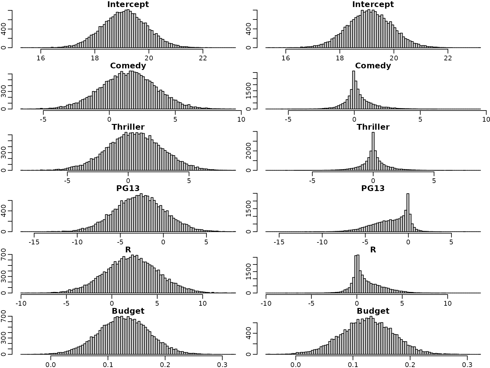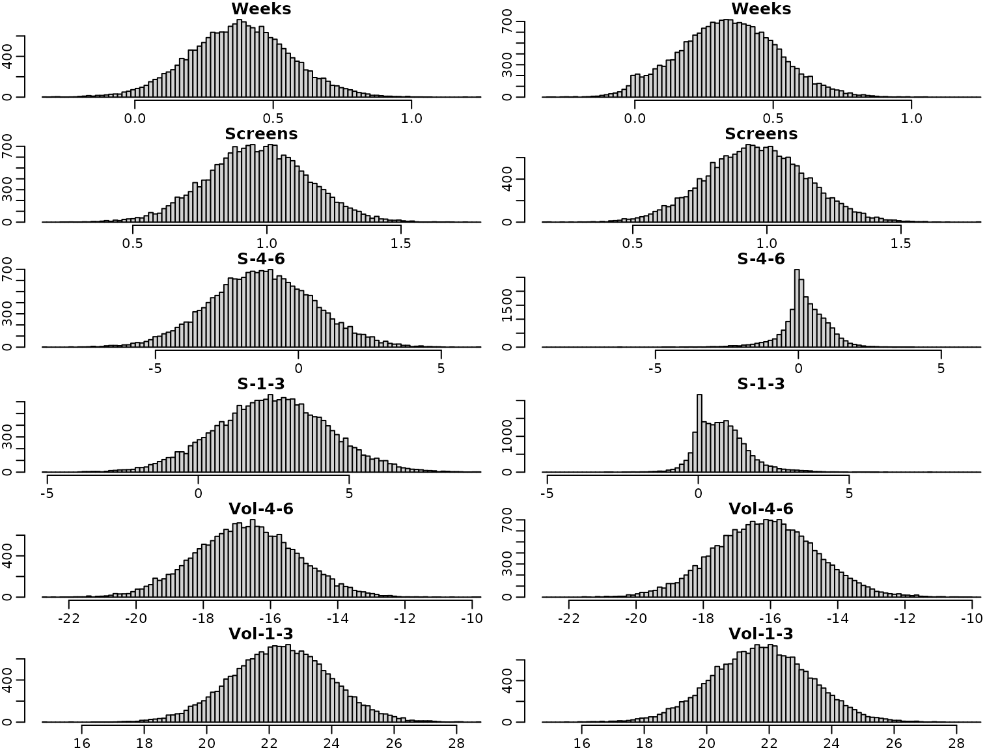
For illustration purposes, we overlay four selected marginal posteriors in order to illustrate the shrinkage effect.
par(mfrow = c(2, 2))
selection <- c("Screens", "Weeks", "S-1-3", "Thriller")
for (i in selection) {
breaks <- seq(min(beta.sc[, i], beta.hs[, i]), max(beta.sc[, i], beta.hs[, i]),
length.out = 100)
h1 <- hist(beta.sc[, i], breaks = breaks, plot = FALSE)
h2 <- hist(beta.hs[, i], breaks = breaks, plot = FALSE)
col <- c(rgb(0, 0, 1, 0.25), rgb(1, 0, 0, 0.25))
plot(h1, main = i, xlab = "", ylab = "", freq = FALSE,
ylim = c(0, max(h1$density, h2$density)), col = col[1])
plot(h2, xlab = "", ylab = "", freq = FALSE, col = col[2],
add = TRUE)
}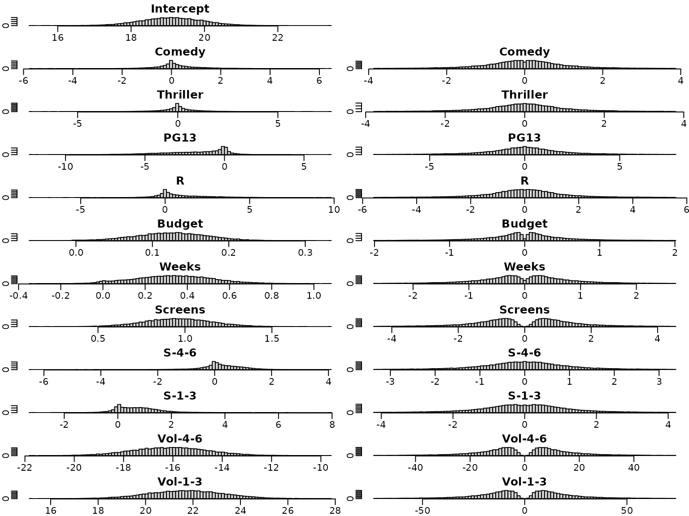
Next, we investigate the trace plots of the draws from the posterior. As above, the plots on the left are obtained under the semi-conjugate prior, those on the right under the horseshoe prior.
par(mfrow = c(6, 2))
for (i in seq_len(d)) {
plot(beta.sc[, i], type = "l", xlab = "", ylab = "", main = colnames(beta.sc)[i])
plot(beta.hs[, i], type = "l", xlab = "", ylab = "", main = colnames(beta.sc)[i])
}To sum up, we visualize the posterior of the effects and corresponding (square root of the) shrinkage parameters. For visual inspection, we create a gap plot, where we remove the largest 5% of the local shrinkage parameter draws and mirror them around 0. That way, we can easily identify “significant” effects via clear bimodality or even a gap around zero – hence the name.
tau2.hs <- post.draws.hs$tau2s
alpha <- 0.05
truncate <- function(x, alpha) x[x <= quantile(x, 1 - alpha)]
tau2.hs.trunc <- apply(tau2.hs, 2, truncate, alpha = alpha)
tau.hs.trunc.mirrored <- rbind(sqrt(tau2.hs.trunc),
-sqrt(tau2.hs.trunc))On the left, we see the posteriors of the regression effects posteriors, on the right, we visualize the gap plot.
par(mfrow = c(12, 2))
for (i in seq_len(ncol(beta.hs))) {
breaks <- seq(min(beta.hs[, i]), max(beta.hs[, i]), length.out = 100)
hist(beta.hs[, i], breaks = breaks, xlab = "", ylab = "",
main = c("Intercept", covs)[i])
if (i == 1) {
plot.new()
} else {
breaks <- seq(min(tau.hs.trunc.mirrored[, i - 1]),
max(tau.hs.trunc.mirrored[, i - 1]), length.out = 100)
hist(tau.hs.trunc.mirrored[, i - 1], breaks = breaks, xlab = "", ylab = "",
main = covs[i - 1])
}
}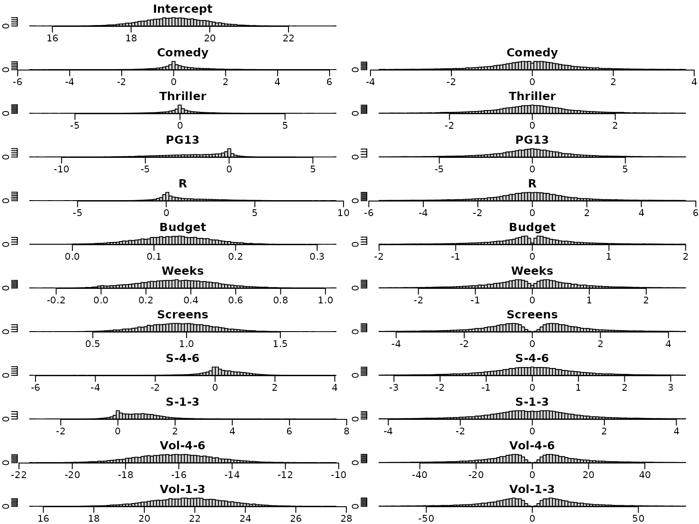
Example 6.8: Movie data- Check convergence by a second MCMC run
We verify convergence of the sampler by doing a second run of the six block sampler in Algorithm 6.2. In the QQ plots of the draws of the intercept and the error variance, the draws are very close to the identity line and hence we can conclude that the sampler has converged.
post.draws.hs2 <- reg_hs(y, X, M = M)
par(mfrow = c(1, 2),mar = c(2.0, 2.0, 2.0, .1), mgp = c(1, .2, 0))
qqplot(post.draws.hs$betas[, 1], post.draws.hs2$betas[, 1],
xlim = range(post.draws.hs$betas[, 1], post.draws.hs2$betas[, 1]),
ylim = range(post.draws.hs$betas[, 1], post.draws.hs2$betas[, 1]),
main = "QQ plot for the intercept", xlab = "First run", ylab = "Second run" )
abline(a = 0, b = 1)
qqplot(post.draws.hs$sigma2s, post.draws.hs2$sigma2s,
xlim = range(post.draws.hs$sigma2s, post.draws.hs2$sigma2s),
ylim = range(post.draws.hs$sigma2s, post.draws.hs2$sigma2s),
main = "QQ plot for the error variance",xlab = "First run", ylab = "Second run" )
abline(a = 0, b = 1)
Example 6.9: Movie data - Predictions
We predict the box office sales for different movies: a film with baseline values in all covariates (A), a film with baseline values in all covariates except genre Comedy (B) or Thriller (C) and finally a film of genre Thriller with MPAA rating PG13 (D).
nf <- 4
X_new <- cbind(rep(1, nf), matrix(0, nrow = nf, ncol = p))
colnames(X_new) <- colnames(X)
X_new[2, "Comedy"] <- 1
X_new[3:4, "Thriller"] <- 1
X_new[3, "PG13"] <- 1
X_new[4, "R"] <- 1
X_new[, "Budget"] <- 10
ypred.sc <- X_new %*% t(beta.sc) +
rep(rnorm(length(sigma2.sc), sd = sqrt(sigma2.sc)), each = nrow(X_new))
pred.int.sc <- apply(ypred.sc,1, quantile, probs = c(0.025, 0.5, 0.975))
pred.mean.sc <- rowMeans(ypred.sc)
ypred.hs <- X_new %*% t(beta.hs) +
rep(rnorm(length(sigma2.hs), sd = sqrt(sigma2.hs)), each = nrow(X_new))
pred.int.hs <- apply(ypred.hs,1, quantile, probs = c(0.025, 0.5, 0.975))
pred.mean.hs <- rowMeans(ypred.hs)We plot the predicted expectation, the median of the predictive distribution, together with vertical bars indicating the point-wise equal-tailed 95% predictive interval.
matplot(x = t(matrix(1:nf, ncol = 3, nrow = nf)),
y = pred.int.sc, col = "blue", type = "l", pch = 16, lty = 1,
ylim = c(0, 40), xlim = c(0.5, nf+0.5),
xlab = "Scenarios", ylab = "Predicted box office sales", xaxt = "n")
points(x = 1:nf, y = pred.int.sc[2, ], pch = 19, col = "blue", cex = 1.2)
points(x = 1:nf, y = pred.mean.sc, pch = 16, col = "red")
matplot(x = t(matrix((1:nf)+0.2, ncol = 3, nrow = nf)),
y = pred.int.hs, col = "blue", type = "l", pch = 16, lty = 1, add = TRUE)
points(x = (1:nf)+0.2, y = pred.int.hs[2, ], pch = 19, col = "blue", cex = 1.2)
points(x = (1:nf)+0.2, y = pred.mean.hs, pch = 16, col = "red")
axis(1, at = 1:nf, labels = c("A", "B", "C", "D"))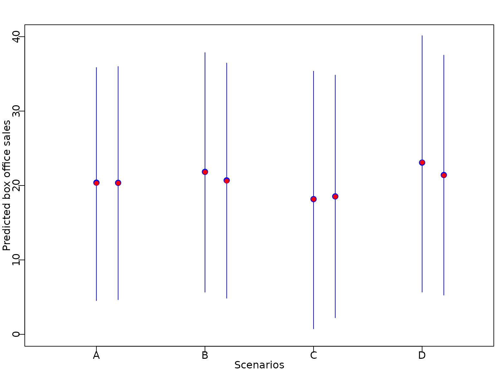
Section 6.5: Shrinkage beyond the Horseshoe Prior
Figure 6.11
We next investigate different shrinkage priors and plot the marginal prior on a regression coefficient for various choices of the hyperparameters.
# Thanks to Peter Knaus for providing the code
# Marginal densities for Triple Gamma, Horseshoe, Double Gamma, and LASSO
# Some functions that return the log-marginal densities
## Log-marginal and marginal for Triple Gamma
logmarginal_TG <- function(x, a, c, kappa2) {
-0.5*log(4*pi/kappa2) - lbeta(a, c) + 0.5*(log(a) - log(c)) + lgamma(c + 0.5) +
log(gsl::hyperg_U(c + 0.5, -a + 1.5, kappa2*a*x^2/(4*c), give = FALSE, strict = TRUE))
}
## Log-marginal and marginal for Double Gamma
logmarginal_DG <- function(x, a, kappa2) {
0.5*(a + 0.5)*log(a*kappa2) - 0.5*log(pi) - (a-0.5)*log(2) - lgamma(a) + (a - 0.5)*log(abs(x)) +
log(besselK(sqrt(a*kappa2)*abs(x), a-0.5))
}
# Select color palette
color <- RColorBrewer::brewer.pal(5, "Dark2")
# Create layout matrix for plots
m <- matrix(c(1, 2, 3, 3), nrow = 2, ncol = 2, byrow = TRUE)
layout(mat = m, heights = c(0.9, 0.1))
# Plots around the origin
# Draw horseshoe marginal
curve((logmarginal_TG(x, 0.5, 0.5, 2)),
from = c(-1, to = 1), n = 10000, col = color[1], lwd = 2, ylab = "",
xlab = "", cex = 3, ylim = c(-4, 4), main = "")
# Draw double gamma marginal
curve((logmarginal_DG(x, 0.1, 2)),
n = 10000, col = color[2], lwd = 2, add = TRUE)
# Draw LASSO marginal
curve((logmarginal_DG(x, 1, 2)),
n = 10000, col = color[3], lwd = 2, add = TRUE)
# Draw triple gamma marginal
curve((logmarginal_TG(x, 0.1, 0.1, 2)),
n = 10000, col = color[4], lwd = 2, add = TRUE)
# Add labels to x and y axes
title(ylab = (expression(log~p(beta))), line = 2, cex.lab = 1.2)
title(xlab = expression(beta), line = 3, cex.lab = 1.2)
# Plots in the tails
# Draw horseshoe marginal
curve((logmarginal_TG(x, 0.5, 0.5, 2)),
from = 6, to = 11, n = 10000, col = color[1], lwd = 2, ylab = "",
xlab = "", cex = 3, ylim = c(-18,-5), main = "")
# Draw double gamma marginal
curve((logmarginal_DG(x, 0.1, 2)),
n = 10000, col = color[2], lwd = 2, add = TRUE)
# Draw LASSO marginal
curve((logmarginal_DG(x, 1, 2)),
n = 10000, col = color[3], lwd = 2, add = TRUE)
# Draw triple gamma marginal
curve((logmarginal_TG(x, 0.1, 0.1, 2)),
n = 10000, col = color[4], lwd = 2, add = TRUE)
# Add labels to x and y axes
title(ylab = (expression(log~p(beta))), line = 2, cex.lab = 1.2)
title(xlab = expression(beta), line = 3, cex.lab = 1.2)
# Create legend at bottom of plot
par(mar = c(0, 0, 0, 0))
plot(1, type = "n", axes = FALSE)
legend(x = "top", inset = 0,
legend = c("Normal Gamma Gamma", "Horseshoe", "Normal Gamma", "Lasso"),
col = color[c(4, 1, 2, 3)],
lwd = 2, cex = 1, horiz = TRUE, xjust = 0.5)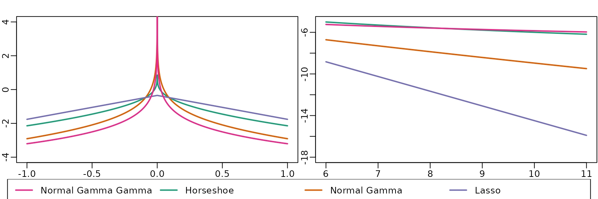
The shrinkage profiles of these priors are visualized in the following plot.
# Thanks again to Peter Knaus for providing the code
# Some functions that return shrinkage profiles
# Shrinkage profile for triple gamma
dTPB <- function(x, a, c, phi) {
res <- lgamma(a + c) - lgamma(a) - lgamma(c) + c*log(phi) +
(c-1)*log(x) + (a-1)*log(1-x) - (a+c)*log(1 + (phi -1)*x)
exp(res)
}
# Shrinkage profile for double gamma
dTPB_DG <- function(x, a, k2) {
res <- -lgamma(a) + a*log(a*k2/2) +
(a-1)*log(1-x) - (a+1)*log(x) - ((1-x)/x*a*k2/2)
exp(res)
}
# Set up plotting area
par(mar = c(4, 4, 0, 12.5))
# Choose color palette
color <- RColorBrewer::brewer.pal(5, "Dark2")
# Draw shrinkage profile of horsehoe
curve((dTPB(x, 0.5, 0.5, 1)),
from = 0, to = 1, n = 1000, col = color[1], lwd = 2, ylab = "",
xlab = "", cex = 3, ylim = c(0, 4), main = "")
# Draw shrinkage profile of double gamma
curve((dTPB_DG(x, 0.1, 2)),
n = 1000, col = color[2], lwd = 2, add = TRUE)
# Draw shrinkage profile of lasso
curve((dTPB_DG(x, 1, 2)), n = 1000, col = color[3], lwd = 2, add = TRUE)
# Draw shrinkage profile of triple gamma
curve((dTPB(x, 0.1, 0.1, 1)),
n = 1000, col = color[4], lwd = 2, add = TRUE)
# Add labels to x and y axes
title(ylab = expression(p(kappa[j])), line = 2, cex.lab = 1.2)
title(xlab = expression(kappa[j]), line = 2, cex.lab = 1.2)
par(xpd = TRUE)
legend(x = 1.05, y = 3,
legend = c("Normal Gamma Gamma", "Horseshoe", "Normal Gamma", "Lasso"),
col = color[c(4, 1, 2, 3)], bty = "n",
lwd = 2, cex = 1, horiz = FALSE)Example 6.11: A hierarchical Bayesian lasso prior
beta2 <- beta1 <- seq(from = -2, to = 2, by = 0.01)
f <- function(x1, x2) {
exp(log(a+1) + log(a) + a*log(a) - (a+2)*log(a+abs(x1)+abs(x2)))
}
par(mfrow = c(1, 3), mar = c(4.5, 4.5, .1, .1),
mgp = c(2.6, .6, 0))
for (a in c(0.1, 1, 10)) {
z <- outer(beta1, beta2, f)
contour(beta1, beta2, z, nlevels = 10,
xlab = expression(beta[1]), ylab = expression(beta[2]),
drawlabels = FALSE)
}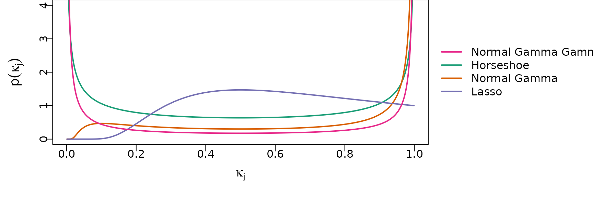